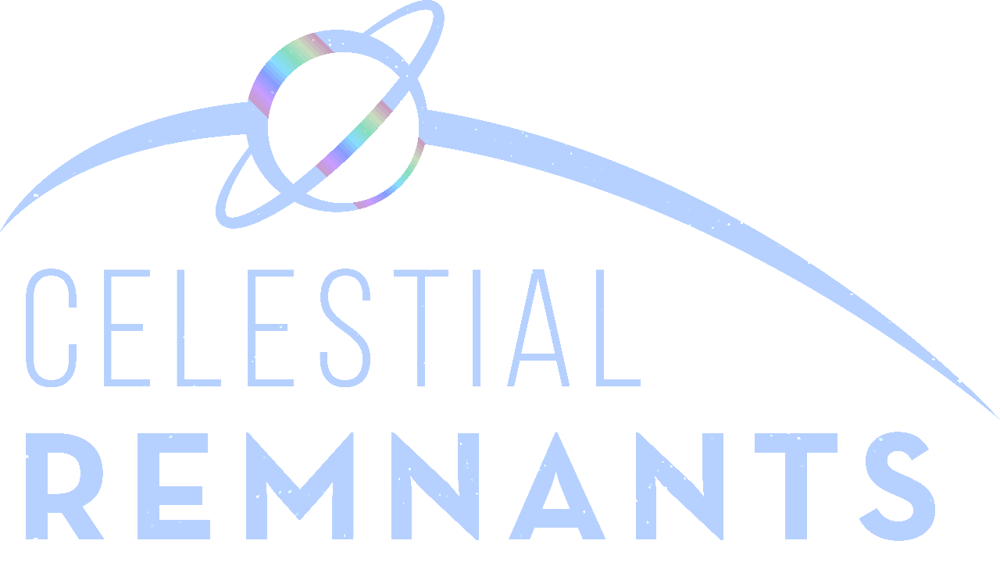
About
Celestial Remnants is a quest-based skyblock modpack. When starting your game, you can choose between four different preset maps. Quests will guide you through expanding your island and teach you how to use the resource available to you. There are quests to teach you the basics of how to start out in skyblock, how to use tech mods and magic mods, and quests that require you to get certain items in massive quantities. Completing quests occasionally provides items used in progression, and almost always rewards coins, which can be used to purchase custom loot bags. There are currently 27 loot bag types of different categories and tiers.
There are also many custom resources. All of these resources have Tinker's Construct stats and traits, and can be made into Tinker's tools and armor. Among the added materials are new alloys which are made by combining existing alloys. The end result provides extremely powerful resources that have most of the traits and stats of what they are made from. There are also some scientific-style materials available, like aerogel and graphene.
Some of the most fun I have ever had in Minecraft was playing Agrarian Skies 1 and 2 with my friends 2014-2016. This modpack serves as my way to recreate what made that so special. That does not mean this is at all like Agrarian Skies; this pack recreates the parts of Agrarian Skies that I personally liked the most, but that is likely very different for other people.
Quests
Beginning
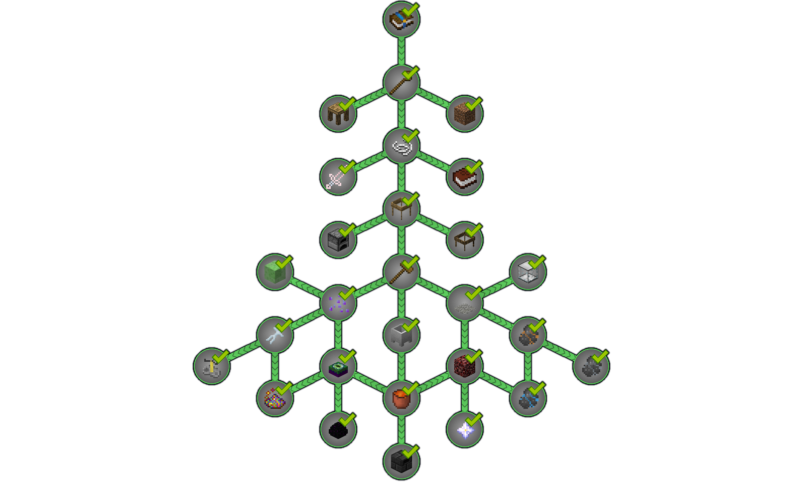
The first quest line guides you through the start of the game, focusing on early game progression and teaching how to get resources from nothing in a skyblock environment.
Farming
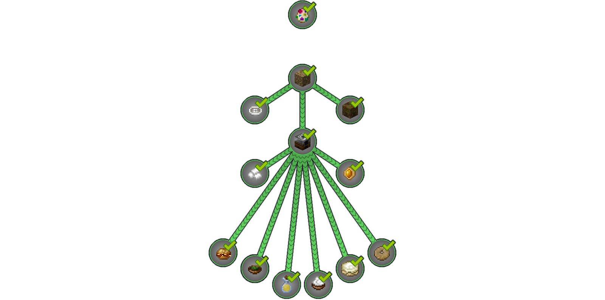
Next up is the farming quest tree, which guides you through how to obtain various Pam's Harvestcraft items, as well as teaching the unique method of creating mob spawn eggs.
Tinker's Construct
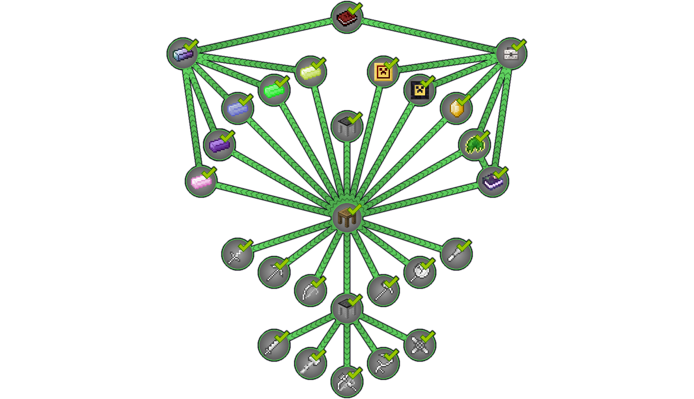
The Tinker's Construct quest tree guides you from the basics of making tools, to learning about the useful modifiers, tools, and unique materials offered in the modpack.
Tech
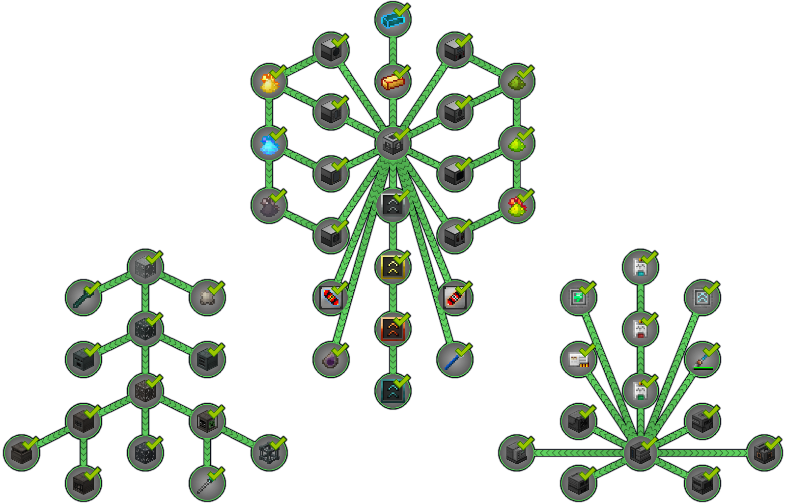
The tech tree is split into EnderIO, Thermal Expansion, and Mekanism trees, which show different machines, resources, and upgrades from each mod.
Storage
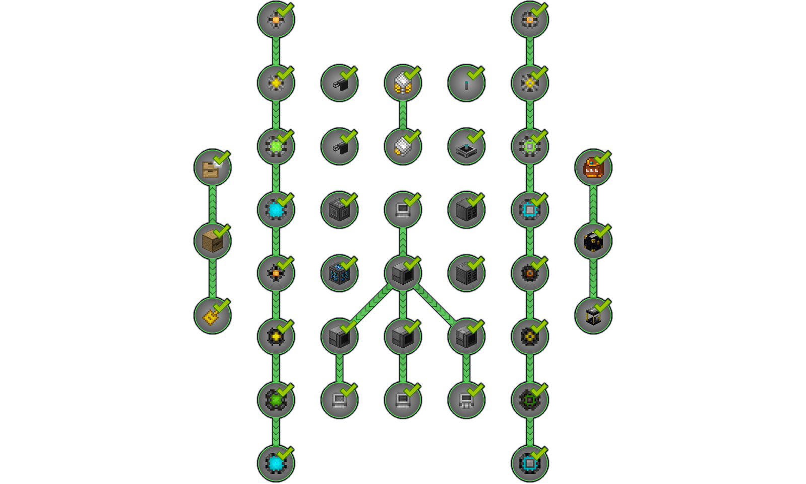
The storage quest tree shows how to create a storage system with Refined Storage, as well as how to use drawers and ender storage items.
Mobs
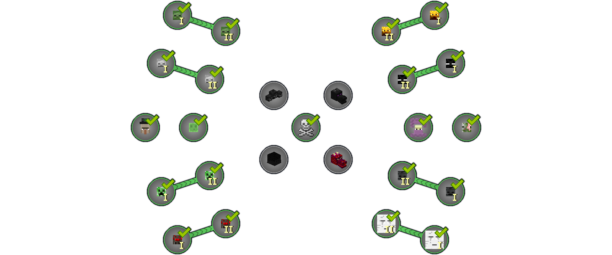
The mob quest line requires you to fight and gather resources from various mobs in the game, and includes repeating quests for defeating different final bosses which can offer a renewable source of coins and loot bags.
Botania
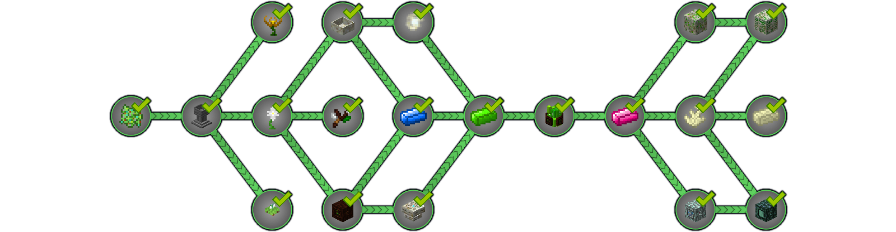
The Boania quest line guides you through the Botania mod, from getting your first mystical flowers, to defeating the Guardian of Gaia.
Energy
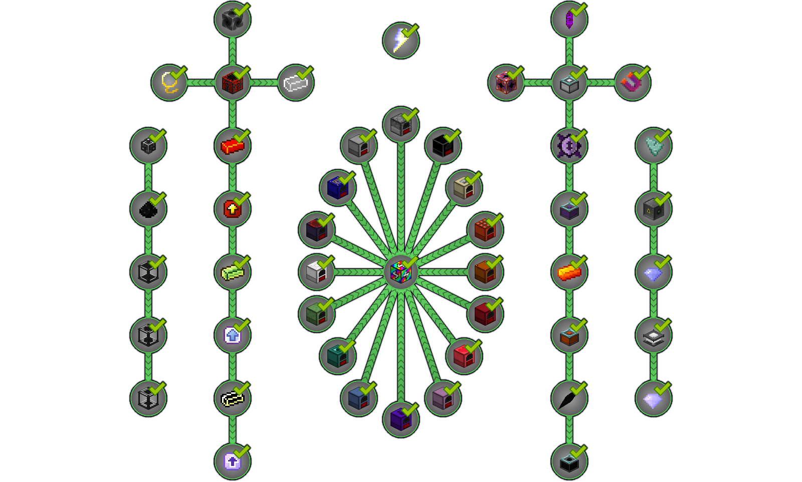
The energy quest line brings you through various ways of obtaining and transferring energy, as well guiding you through some of the mods involved in that process; Extra Utilities 2 and Draconic Evolution.
Custom

The custom quest line guides you through creating all of the custom items created for this modpack. The left tree shows how to combine items to create alloys made up of all the other metals in the game. The right tree shows how to make unique crystal types by infusing quartz with various materials. The top tree shows how to make carbon nanotubes and graphene. Finally, the bottom tree shows how to make dry ice and aerogel.
Hoarding
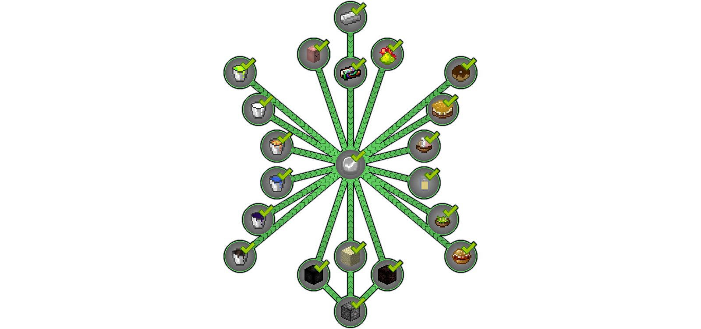
The final quest line is about hoarding mass quantities of items. This quest line is for those who like the grind of automation and want to experience all the modpack has to offer. These quests will be much more difficult than most other quests and will require an expert knowledge of how to use the automation tools available to you is needed. You don't need to finish these to "beat" the modpack, but they are available if you want to go for 100% completion.
Maps
Lone Tree
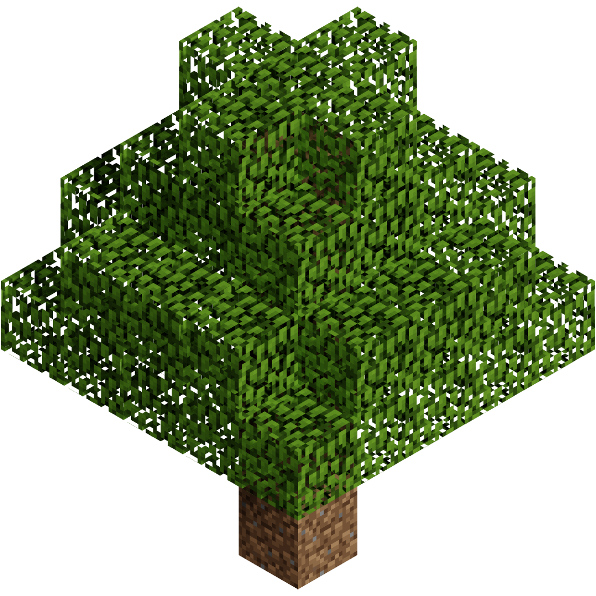
Spawn on a single tree and a block of dirt, SkyFactory style. Provides the fewest starting resources.
Remnants
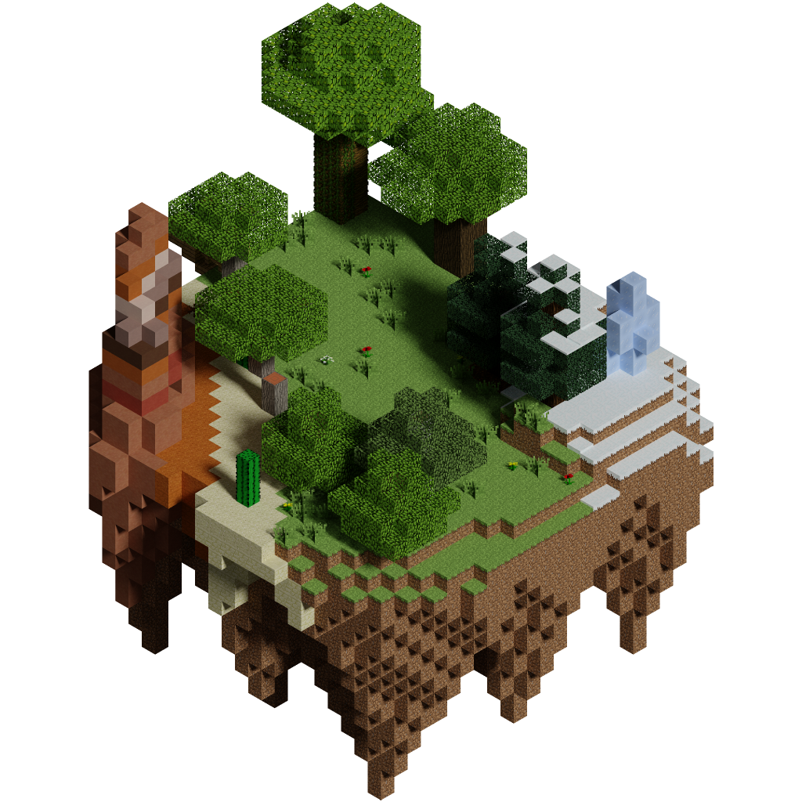
Spawn on a large floating island with different biomes compressed into a small area. Provides the most starting resources.
Morvy
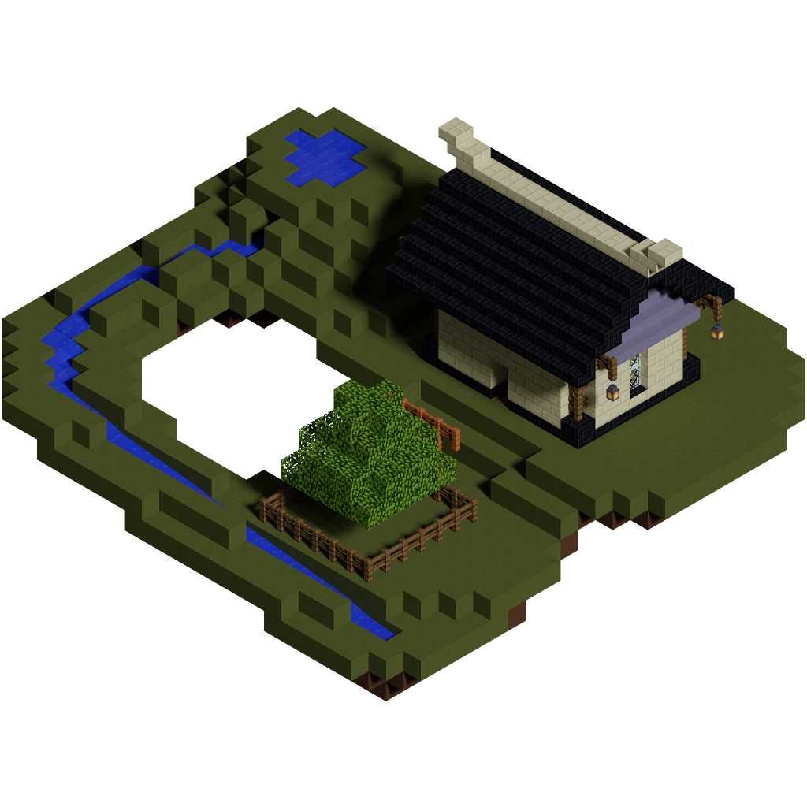
Spawn in a small cottage on a terracotta island, based on Morvy's Cottage from Agrarian Skies. Provides minimal starting resources.
Seablock

Spawn on a small island in an infinite ocean world for a seablock experience. Provides a moderate amount of starting resources.
Items

This image shows most of the custom items available in the modpack. The top 4 rows show different versions of the various alloys, row 5 shows the custom crystal materials, row 6 and 7 show mostly the scientific materials, with a few extra items at the end, and finally the last 3 rows show the system used to build spawn eggs from animal parts, as well as a few extra items at the end.
Loot Bags
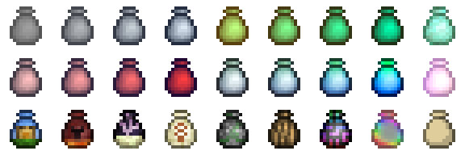
There are a number of custom loot bags that can be bought with coins from quest rewards. Loot bag types are unlocked by progressing through the quest tree. Some of them have different tiers that can be unlocked throughout the stages of play.
Utility Loot Bag
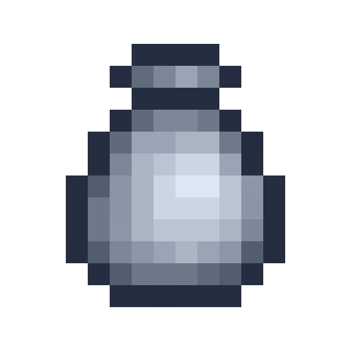
Utility loot bags have four tiers, each providing different qualities of usable items or tools.
Resource Loot Bag
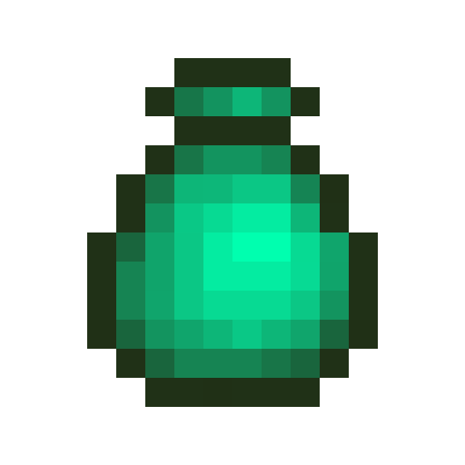
Resource loot bags have four tiers, each providing different qualities of crafting resource.
Accessory Loot Bag
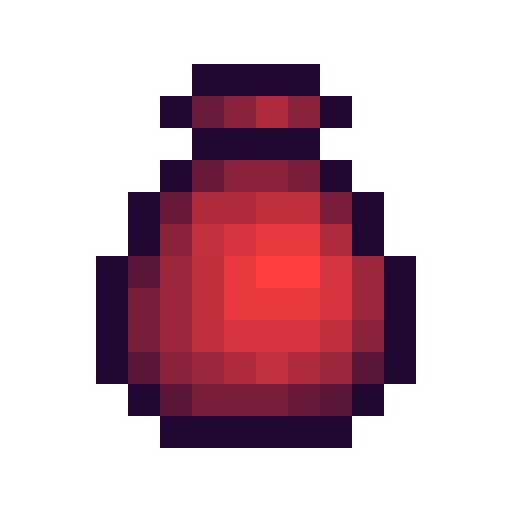
Accessory loot bags have four tiers, each providing different qualities of accessory or bauble.
Cosmetic Loot Bag
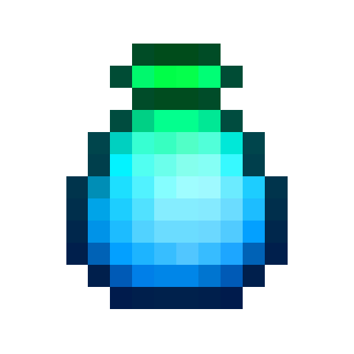
Cosmetic loot bags have four tiers, each providing different qualities and different amounts of cosmetic blocks or accessories.
Botania Cosmetic Loot Bag
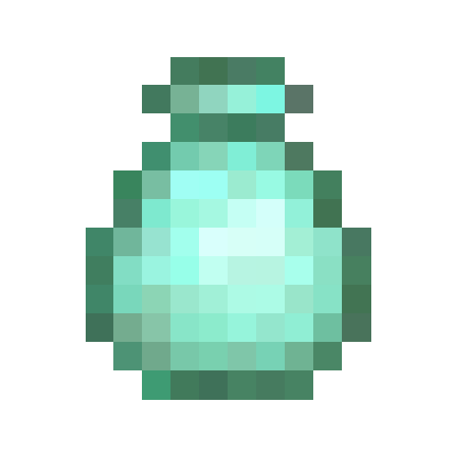
Wood Loot Bag
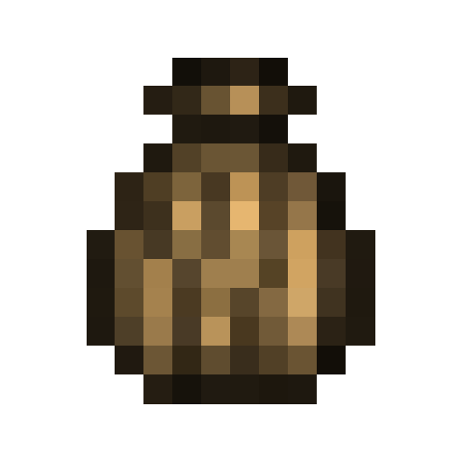
Egg Loot Bag

Tinker's Construct Materials
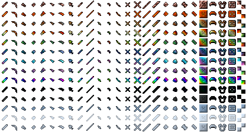
Each material in the quest line for custom items can be made into Tinker's Construct gear. These typically have the traits of their constituent parts.
Contact
To contact me, you can leave a comment on the Curseforge page or message me on discord at pawjwp#3605.
Feel free to let me know what you think about the pack. If you find bugs, mistakes, or want to suggest anything, let me know. Right now, there is almost nothing too trivial, I want to improve whatever I can.